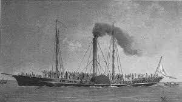
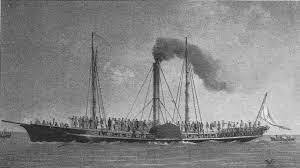
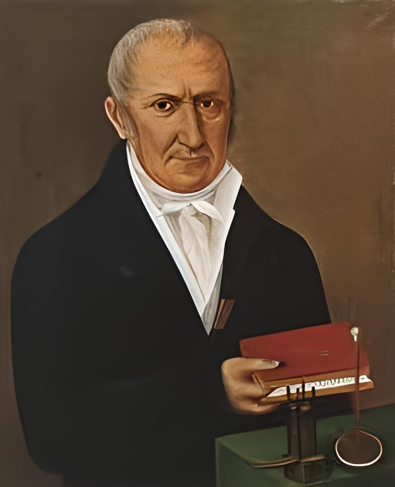

SI SVILUPPA L'INDUSTRIA CHIMICADurante la rivoluzione industriale, lo sviluppo dell'industria chimica fu guidato da scoperte e invenzioni di scienziati come Antoine-Laurent Lavoisier. La crescente domanda di candeggianti e coloranti nelle fabbriche tessili portò all'uso di composti chimici prodotti in laboratorio. Questo segnò l'applicazione della chimica in vari settori produttivi. Lavoisier contribuì con scoperte fondamentali, dimostrando che l'aria è una miscela di gas, che l'acqua è composta da idrogeno e ossigeno, che una sostanza è un elemento se non può essere ulteriormente decomposta, e che la quantità di materia coinvolta in una reazione chimica rimane costante. IL VAPORE È APPLICATO ALLE NAVI…Durante il progresso industriale, lo sviluppo dei trasporti vide risultati significativi, con notevole interesse nella navigazione a vapore. Sebbene i primi tentativi di applicare un motore a vapore a carri e carrozze non avessero successo, la navigazione fluviale in America ebbe un notevole sviluppo con il battello a vapore Clermont di Robert Fulton nel 1807, che collegava regolarmente New York ad Albany. La nave americana Savannah, nel 1818, attraversò l'Oceano Atlantico in diciannove giorni. Tuttavia, le navi a vapore continuarono a utilizzare le vele per decenni a causa delle difficoltà nel trasportare grandi carichi di carbone per la traversata.   … E AI TRENILo sviluppo rapido delle locomotive a vapore, guidato dagli ingegneri George e Robert Stephenson, portò all'apertura nel 1825 della prima linea ferroviaria del mondo, la Stockton-Darlington, con la leggera e efficiente locomotiva Rocket. Inizialmente, ci furono preoccupazioni e proteste riguardo alle ferrovie, temendo asfissia per i passeggeri e spavento per le mucche. Tuttavia, l'esperienza dimostrò che tali timori erano infondati, e le ferrovie divennero simbolo dell'era dei trasporti a vapore, con reti ferroviarie che si estesero in tutta Europa.  SI ANNUNCIA UNA NUOVA ENERGIA: L'ELETTRICITÀNel Settecento, l'ambra fossilizzata, chiamata in greco eléktron, ispirò il nome "elettricità". L'ambra elettrizzata era spesso utilizzata in giochi aristocratici, provocando scintille e scosse elettriche. Tuttavia, raramente si ottennero risultati pratici, tranne per l'invenzione dei parafulmini nel 1799 da parte di Benjamin Franklin. Alessandro Volta contribuì con gli esperimenti sulla pila, aprendo la strada all'utilizzo pratico dell'elettricità in campo industriale. Benjamin Frenklin  Alessandro Volta |
 |